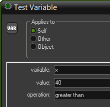
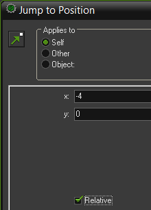
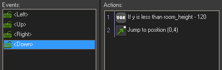

Tutorial
Page 6 of 13
The Main Plane
Now that the scrolling background is ready it is time to make the plane that the player will control. This is actually rather easy. First of all we need a sprite for the plane. We will use a
propeller plane. To give the propellers the illusion of rotating we use a sprite consisting of three images that are exactly the same except for the propellers (this image can be found as
myplane_strip3 in the appropriate Tutorials folder where GameMaker was installed):

Such animated sprites can be found in files that end with _stripXX, where XX indicates the number of subimages.
When creating this sprite we do one important thing. We set the X and Y of the Origin to 32. This means that the origin of the sprite is the centre of the plane.
So whenever we later set the plane at a position or test the position, we mean the position of the centre of the plane, not the top-left point, which is normally used as the origin. This is important
to make sure that for example bullets come from the centre of the plane, not from the left side.
Next we add the object obj_myplane. As sprite we choose the plane sprite we just created. We give it a depth of –100 to make sure that it lies above bullets, etc. that we will
create later. (Dealing with the depth property in an effective way is very important for many games. So you better understand how to use this.)
For the moment we only need to specify the motion of the plane.
When the player does nothing, the plane will not move. (Remember, the background moves, not the plane.) If the player presses one of the four arrow keys the plane should move in the
appropriate direction. Our main concern is to avoid that the plane moves outside the room. To this end we will control the motion ourselves, rather than give the plane a speed. This is done
as follows.
Let us look at the motion for the left arrow key. Add the keyboard event for the key. We first need to check that we are not too far to the left. So we use the action to check
whether the variable x is larger than 40, similar to the way we checked the y-coordinate of the islands above. If this check returns true we want to move the plane a small distance to
the left relative to its current position.


For this we use the “jump to a position” action to move relative –4 for x and 0 for y. Don't forget to check the box labeled Relative. For the right arrow we do a similar thing. We
check whether x is smaller than room_width-40 and, if so, jump relative to an x of 4 and y of 0. Similar for the vertical motion, but this time we check the y position of the
plane first and move only with a speed of –2 and 4.
We use -2 for moving up as the the background moves down at a speed of 2, so the overall speed appears to be 4 for the plane instance. At the bottom of the screen, make the y
position check keep a larger margin of 120 pixels, since this will be used later to place a panel with some game information. The final set of events for the plane should look like this:

Our plane can fly now. Place one instance of the plane in the room and run the game. You should get the illusion of flying above the sea.